We introduce CT2Yarn, a human-in-the-loop framework for recovering a single continuous yarn path from micro-computed tomography (micro-CT) scans of real crochet objects. Crochet is a craft that creates complex three-dimensional shapes by interlocking loops formed from a single yarn. Recovering the underlying yarn path from external observations is challenging because of severe self-occlusion. While micro-CT reveals the full internal structure of a crochet object, the volumetric scan alone does not explicitly encode how the yarn traverses the object.
This challenge stems from the hierarchical structure of yarn: a yarn consists of multiple twisted plies, and each ply itself consists of twisted fibers. Consequently, local fiber orientations observed in micro-CT scans are not aligned with the overall yarn direction. To recover yarn-level orientations from ply-level fiber orientations, we first estimate local fiber directions using Gabor filtering and convert the volume into an oriented point cloud. We then introduce an anisotropic mean-shift procedure that aggregates local fiber orientations within a neighborhood of the yarn radius into yarn-level orientation estimates.
Combined with an automatic topology skeletonization strategy, our method extracts yarn-path fragments. Subsequent fragment linking, junction cleaning, and loop detection merge these trees into a small number of long curves. Where the automatic reconstruction remains ambiguous, a sketch-based user interface enables users to interactively complete the single continuous yarn path. The recovered yarn path enables downstream applications including physically based simulation, ply-level rendering, and stitch-pattern extraction.
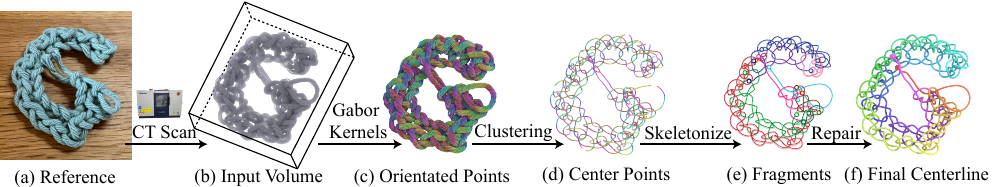
A crocheted sample is scanned, converted into an oriented point cloud by Gabor filtering, condensed onto the yarn centre by an anisotropic mean shift, skeletonized into fragments, and finally repaired into one continuous centerline.
The micro-CT volume. Every yarn cross-section is visible, the path through the fabric is not.
The recovered centerline, one continuous strand, coloured by arc length.
Eighteen micro-CT scans of real crocheted samples, each one continuous yarn. Each tile shows the photograph of the physical piece and, on hover, the volume rendering of its scan. The raw volumes are archived on Zenodo under CC BY 4.0.
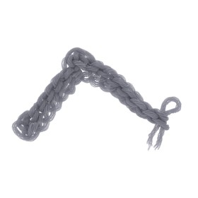
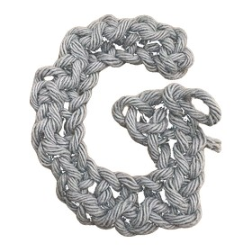
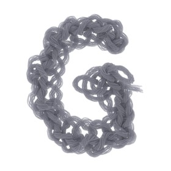
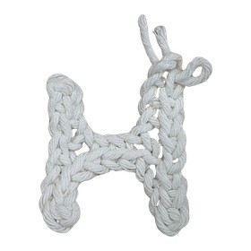
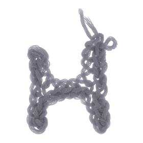
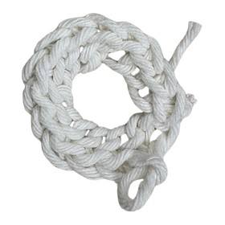
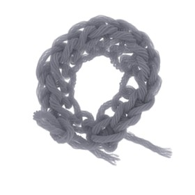
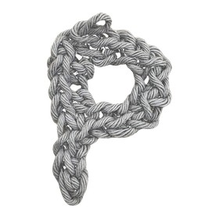
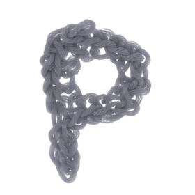
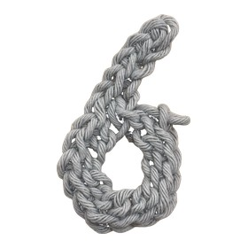
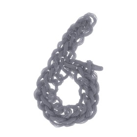
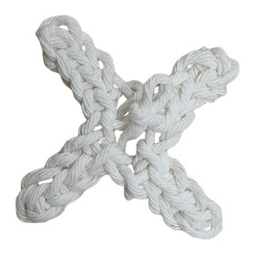
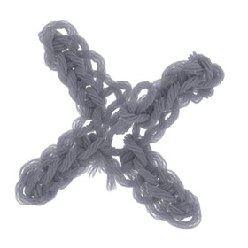
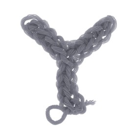
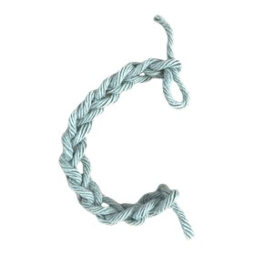
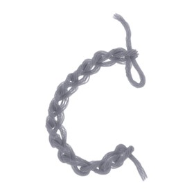
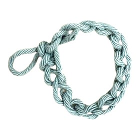
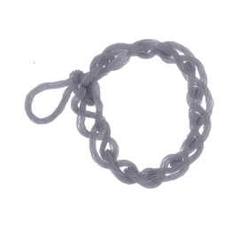
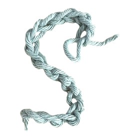
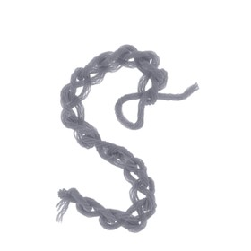
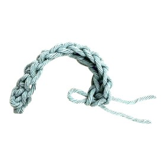
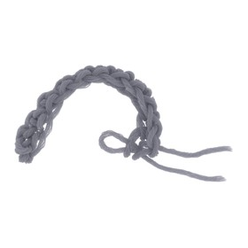
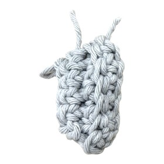
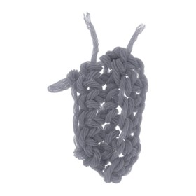
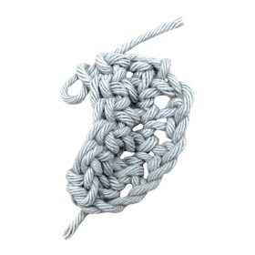
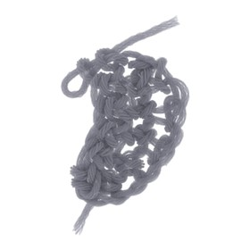
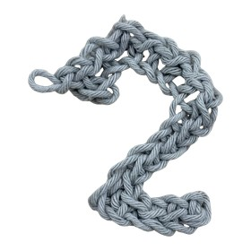
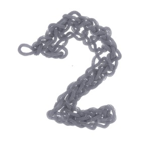
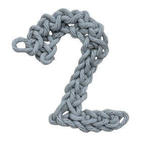
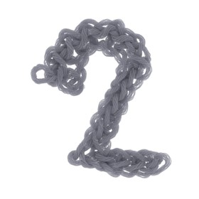
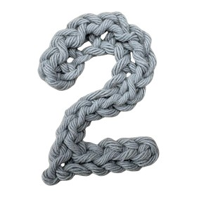
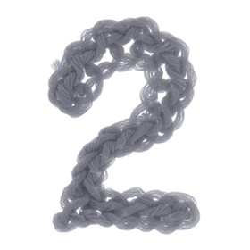
Hover to pause and reveal the CT volume. Drag to browse.
Seven samples end to end. The automatic stage leaves the yarn in a handful of long curves, each drawn in its own colour. Closing the remaining ambiguities by hand yields one continuous strand, coloured by arc length, green at the start and red at the end.
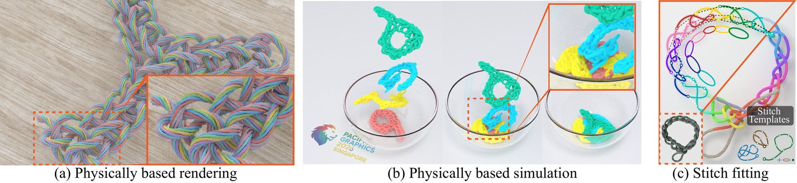
The recovered centerline is a plain polyline, so it feeds straight into downstream uses. Code for all three is in the repository.
Ply-level rendering. The centerline carries no thickness, so we wrap it with a coaxial-helix procedural ply model and render it in Mitsuba 3, with Perlin noise along the ply axis for the fibre-level fuzz.
Physically based simulation. The centerline is treated as a discrete elastic rod and integrated under gravity and self-contact. Here P, G, 2 and 6 fall into a glass bowl.
Stitch pattern extraction. The path is split into stitches, each aligned against a small template library with the Kabsch algorithm and labelled by the type of smallest RMSD.
@inproceedings{ct2yarn_luo26,
booktitle = {Pacific Graphics 2026 - Conference Papers and Posters},
editor = {He, Ying and Thuerey, Nils and Liu, Lingjie},
title = {{CT2Yarn: Yarn-Level Reconstruction of Crochet from Computed Tomography}},
author = {Luo, Chang and Umetani, Nobuyuki},
year = {2026},
publisher = {The Eurographics Association},
ISBN = {978-3-03868-327-8},
DOI = {10.2312/pg.20261024}
}
This website is adapted from Nerfies, licensed under a Creative Commons Attribution-ShareAlike 4.0 International License.